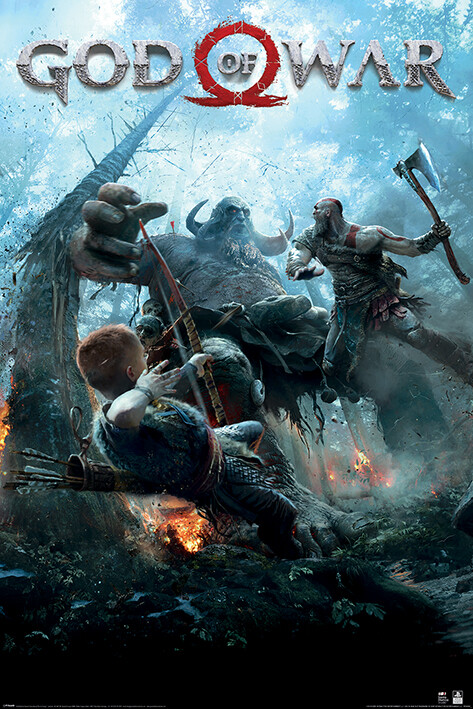

Best Games To Play On PlayStation

God Of War
God of War is an action-adventure game franchise created by David Jaffe at Sony's Santa Monica Studio. It began in 2005 on the PlayStation 2 (PS2) video game console and has become a flagship series for PlayStation, consisting of nine installments across multiple platforms.

Marvel's Spider-Man
Marvel's Spider-Man is a series of action-adventure video games developed by Insomniac Games and published by Sony Interactive Entertainment for PlayStation consoles and Windows. Based on characters appearing in Marvel Comics publications, the games are inspired by the long-running comic book lore, while additionally deriving from various adaptations in other media. The series principally follows protagonists Peter Parker and Miles Morales, who fight crime in New York City as Spider-Men while dealing with the complications of their civilian lives.

Ghost Of Tsushima
Ghost of Tsushima is a 2020 action-adventure game developed by Sucker Punch Productions and published by Sony Interactive Entertainment. The player controls Jin Sakai, a samurai on a quest to protect Tsushima Island during the first Mongol invasion of Japan. Jin must choose between following the warrior code to fight honorably, or using practical but dishonorable methods of repelling the Mongols with minimal casualties. The game features a large open world which can be explored either on foot or on horseback.

The Last Of Us
The Last of Us is a 2013 action-adventure game developed by Naughty Dog and published by Sony Computer Entertainment. Players control Joel, a smuggler tasked with escorting a teenage girl, Ellie, across a post-apocalyptic United States. The Last of Us is played from a third-person perspective. Players use firearms and improvised weapons and can use stealth to defend against hostile humans and cannibalistic creatures infected by a mutated fungus.